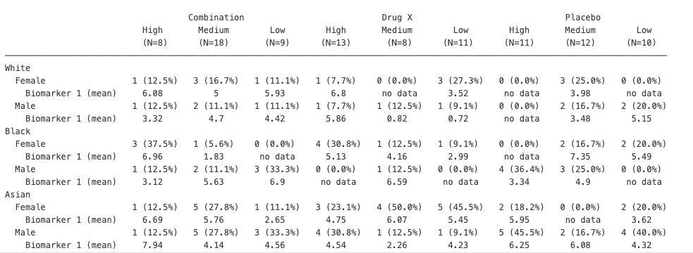
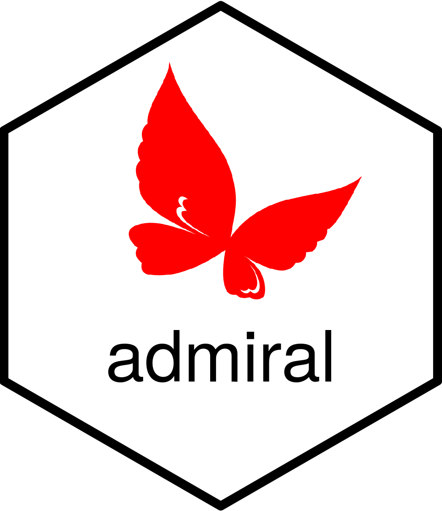
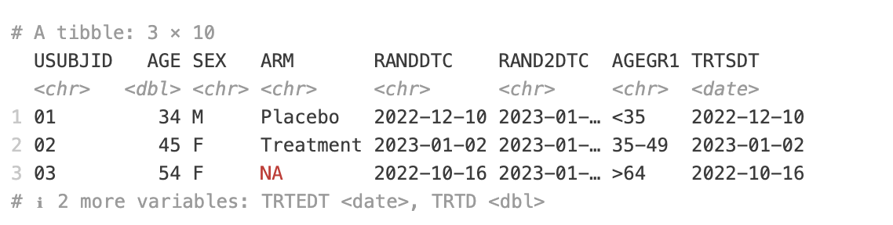
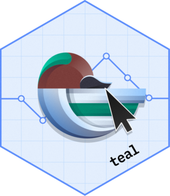
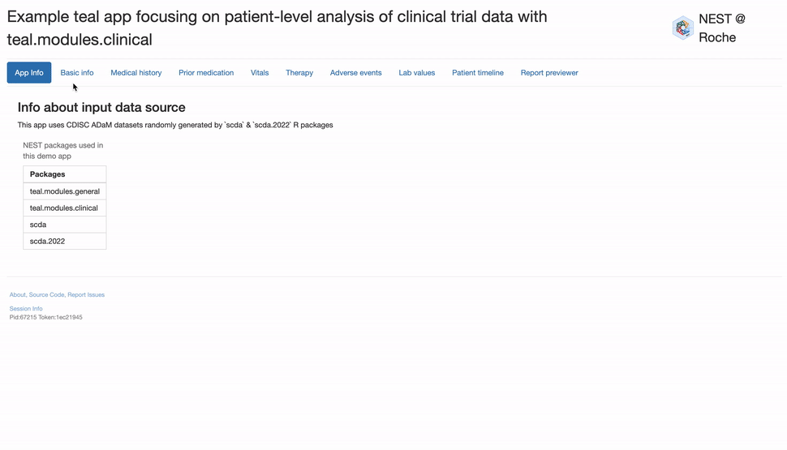
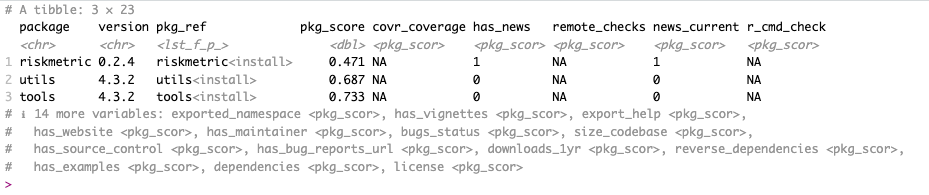
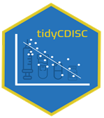
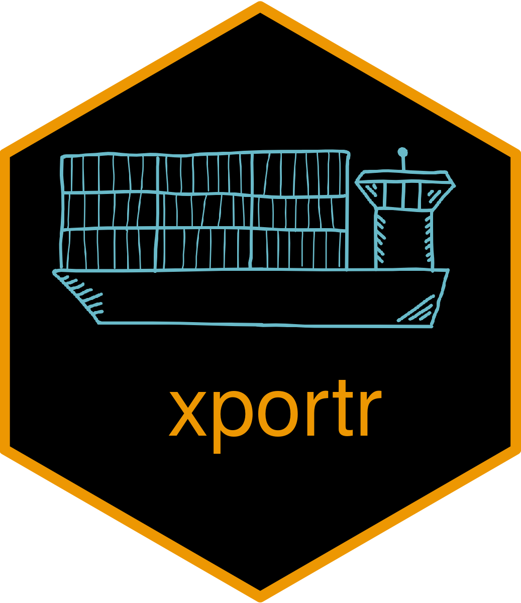

The pharmaverse is a collaborative project where leading pharmaceutical companies and passionate individuals come together to create helpful tools for clinical reporting. By using R programming and the open-source community, the pharmaverse makes it easier to gain insights and increase transparency in the pharma industry.
In this post, let’s explore the top 5 pharmaverse packages (by GitHub Stars ⭐), their interesting features, and how they can be used in clinical data analysis and reporting.
{rtables}: Crafting Regulatory-Ready Tables

Let’s start our journey with {rtables}, a package contributed by Roche, which enables the creation of tables for reporting clinical trials. It offers a flexible and efficient way to generate publication-quality tables, simplifying the reporting process and ensuring consistency across different trials.
{rtables} was primarily designed to address the needs of the pharmaceutical industry for creating regulatory-ready tables for clinical trial reporting. You can use it to generate tables to summarize patient demographics, adverse events, efficacy endpoints, and other clinical trial data.
Features of {rtables}
The {rtables} package offers several features that make it a useful tool for creating complex tables:
{rtables} allows you to define tables with a hierarchical, tree-like structure, enabling the creation of multi-level tables with nested rows and columns.
Each cell in an rtable can contain any high-dimensional data structure, and you can apply custom formatting, such as rounding, alignment, and cell spans, to individual cells.
It supports various output formats, including HTML, ASCII, LaTeX, and PDF, allowing you to generate tables that can be easily integrated into reports, presentations, and shiny applications.
The values in an rtable are stored in a non-rounded state, supporting cross-checking and further analysis.
This package is designed to work with CDISC standards, allowing you to seamlessly integrate it into your clinical data reporting workflows.
Example Code
The following example demonstrates how to create a basic table using the {rtables} package. We start by installing and loading the required libraries.
Next, we create a simulated dataset representing clinical trial data. We then define a function to calculate the mean of a biomarker and use {rtables} functions to build and print the table.
# Install rtables if it's not already installed
if (!requireNamespace("rtables", quietly = TRUE)) {
install.packages("rtables")
}
# Load required library
library(rtables)
# Create a simulated dataset
set.seed(123)
ex_adsl <- data.frame(
ARM = sample(c("Placebo", "Drug X", "Combination"), 100, replace = TRUE),
BMRKR2 = sample(c("Low", "Medium", "High"), 100, replace = TRUE),
RACE = sample(c("Asian", "Black", "White"), 100, replace = TRUE),
SEX = sample(c("Male", "Female"), 100, replace = TRUE),
BMRKR1 = rnorm(100, mean = 5, sd = 2)
)
# Define a function to calculate the mean of a biomarker
biomarker_ave <- function(x, ...) {
val <- if (length(x) > 0) round(mean(x), 2) else "no data"
in_rows("Biomarker 1 (mean)" = rcell(val))
}
# Create the table
table <- basic_table() |>
split_cols_by("ARM") |>
split_cols_by("BMRKR2") |>
add_colcounts() |>
split_rows_by("RACE", split_fun = trim_levels_in_group("SEX")) |>
split_rows_by("SEX") |>
summarize_row_groups() |>
analyze("BMRKR1", biomarker_ave) |>
build_table(ex_adsl)
# Print the table
print(table)Results

You can learn more about rtables:
{admiral}: Simplifying ADaM Dataset Creation

Next let’s take a look at the {admiral} package, initially developed through a collaboration between Roche and GSK. It provides a toolbox of reusable functions and utilities with dplyr-like syntax to prepare CDISC ADaM (Analysis Data Model) datasets. It serves as a valuable resource for statistical programmers looking to build ADaMs according to varying analysis needs while ensuring traceability and compliance with FDA standards. Many more pharma companies and CROs have contributed to the package since its inception in 2021.
Features of {admiral}
Let’s take a look at some features of the package:
{admiral} offers modular functions for adding variables and records to datasets in a step-by-step manner. This makes it easy to adjust code by adding, removing, or modifying derivations.
It provides template R scripts as a starting point for creating different ADaM datasets. These templates can be generated using the use_ad_template() function.
The package offers a flexible and efficient way to generate ADaM datasets from source data, ensuring compliance with CDISC standards and traceability of the data transformation process.
By providing a consistent set of functions and utilities for ADaM dataset creation, {admiral} helps to standardize the reporting process across different clinical trials and pharmaceutical companies.
Modular design allows for extensions that focus on specific areas or needs. Three open-source packages are currently extending {admiral}: {admiralonco}, {admiraloptha} and {admiralvaccine}. All of them were created from the admiral template. Two more are in the works: {admiralpeds} and {admiralmetabolic}.
Example Code
Let’s see how to use the {admiral} package to prepare an ADaM dataset.
We start by loading the necessary libraries and creating a sample study dataset. We then derive the ADSL (Subject-Level Analysis Dataset) and add additional variables for further analysis.
library(admiral)
library(dplyr)
library(lubridate)
# Sample study data
study_data <- tibble::tribble(
~USUBJID, ~AGE, ~SEX, ~ARM, ~RANDDTC, ~RAND2DTC, ~VISIT, ~VISITDY, ~VSDTC, ~VSTPT, ~VSORRESU, ~VSORRES, ~PARAMCD,
"01", 34, "M", "Placebo", "2022-12-10", "2023-01-15", "Screening", -7, "2023-01-08", "Pre-dose", "kg", 80, "WEIGHT",
"02", 45, "F", "Treatment", "2023-01-02", "2023-01-17", "Baseline", 1, "2023-01-17", "Pre-dose", "kg", 65, "WEIGHT",
"03", 54, "F", "", "2022-10-16", "2023-01-09", "Screening", -7, "2023-01-09", "Pre-dose", "kg", 78, "WEIGHT"
)
# Function to aggregate by age group
format_agegr1 <- function(var_input) {
case_when(
var_input < 35 ~ "<35",
between(var_input, 34, 50) ~ "35-49",
var_input > 50 ~ ">64",
TRUE ~ "Missing"
)
}
# Derive ADSL (Subject-Level Analysis Dataset)
adsl <- study_data |>
select(USUBJID, AGE, SEX, ARM, RANDDTC, RAND2DTC) |>
distinct() |>
# Convert blanks strings to NA
convert_blanks_to_na() |>
# admiral does not yet support aggregation function, but dplyr can be used
mutate(
AGEGR1 = format_agegr1(AGE)
) |>
# Convert from character to DATE
derive_vars_dt(
dtc = RANDDTC,
new_vars_prefix = "TRTS"
) |>
derive_vars_dt(
dtc = RAND2DTC,
new_vars_prefix = "TRTE"
) |>
derive_vars_duration(
new_var = TRTD,
start_date = TRTSDT,
end_date = TRTEDT,
add_one = FALSE
)
# Display the ADSL dataset
print(adsl)Results

More on {admiral}:
{teal}: Interactive Data Exploration

{teal} is an open-source R Shiny framework developed by Roche that enables the creation of interactive data exploration applications for the pharmaceutical industry. {teal} is particularly well-suited for exploring and analyzing data from clinical trials, enabling researchers and clinicians to quickly identify trends, patterns, and insights.
{teal}’s reporting functionality can be used to generate regulatory-ready tables, figures, and listings. Study teams currently use it to explore data interactively and get the code to reproduce those TLGs. In the future, we hope to use it for submission to governing bodies. It can also be used to build interactive dashboards for monitoring and analyzing adverse events in clinical trials, supporting pharmacovigilance efforts. Its modular design allows for the integration of specialized modules for the analysis and visualization of high-dimensional biomarker data.
Features of {teal}
{teal} offers a flexible filter panel that allows users to easily filter and explore their data in real-time.
The “Show R Code” functionality enables users to reproduce the visualizations and analyses from the application in a new R session, promoting transparency and reproducibility.
Its reporter functionality allows users to build custom reports based on the visualizations filtered and parameterized in the app. Users can generate PDFs or PPT documents that include images and optional code.
The package is built on a modular architecture, providing a range of pre-built, customizable modules that can be easily integrated into applications to address specific data analysis and visualization needs.
It is designed to seamlessly integrate with other pharmaverse packages, such as {admiral} and {rtables}.
Example
Here’s the Patient Profile {teal} application for patient-level analysis of clinical trial data from the teal.gallery.

Here’s how you can run the app yourself:
source("https://raw.github.com/insightsengineering/teal.gallery/main/_internal/utils/sourceme.R")
# Run the app
restore_and_run("patient-profile", package_repo = "https://insightsengineering.r-universe.dev")You can also find the deployed version of the application.
Some Resources on {teal}
GitHub - Teal Gallery (A Gallery of Exploratory Web Apps used for Analyzing Clinical Trial Data)
Simplifying Clinical Data Dashboards with {teal} and {pharmaverseadam}
GitHub - insightsengineering/teal: Exploratory Web Apps for Analyzing Clinical Trial Data
Shiny Gatherings #8: Teal’s Role in Pharma Innovation with Paweł Rucki
{riskmetric}: Assessing Package Quality and Risk

The {riskmetric} package provides a framework to quantify the “risk” of R packages by assessing various metrics. Developed by the R Validation Hub, it helps organizations evaluate the quality and suitability of R packages for validated environments. The resulting risk is parameterized by the organization, which makes the decision on how to weigh the risk from the different metrics.
Features of {riskmetric}
{riskmetric} evaluates R packages across several categories, including development best practices, code documentation, community engagement, and development sustainability.
The package is designed to be extensible, allowing users to define custom metrics or adapt existing ones to suit their specific requirements.
{riskmetric} includes functions for generating detailed reports and visualizations of the package risk assessment, facilitating informed decision-making.
Example Code
The following example demonstrates how to use the {riskmetric} package to evaluate the risk of selected R packages. We start by loading the necessary libraries and using {riskmetric} functions to assess and score the packages.
# Load necessary libraries
library(dplyr)
library(riskmetric)
# Assess and score R packages
pkg_ref(c("riskmetric", "utils", "tools")) %>%
pkg_assess() %>%
pkg_score()
Results

It is closely related to {riskassessment} (the app’s main goal is to help those making “package inclusion” requests for validated GxP environments) and {riskscore} (data package for cataloging riskmetric results across public repositories).
More on Riskmetric
TidyCDISC: Tidying CDISC Data

{tidyCDISC} is an open-source R package developed by Biogen that provides a set of functions for tidying and manipulating CDISC (Clinical Data Interchange Standards Consortium) datasets. It aims to simplify the process of working with CDISC data by providing an intuitive interface for data transformation tasks and ensuring consistency with the principles of tidy data.
Features of TidyCDISC
{tidyCDISC} adheres to the principles of tidy data, ensuring that CDISC datasets are structured in a consistent and easy-to-work-with format.
The package supports various CDISC datasets, including SDTM (Study Data Tabulation Model), ADaM (Analysis Data Model), and SEND (Standard for Exchange of Nonclinical Data).
It provides a set of functions for common data transformation tasks, such as converting between CDISC datasets, handling missing values, and applying CDISC-specific terminology.
The package includes functions for validating CDISC datasets and performing consistency checks across related datasets.
{tidyCDISC} is designed to work seamlessly with other pharmaverse packages.
Example
Here’s a demo version of {tidyCDISC} you can try.

In the documentation, you can find more examples of applications and how to use {tidyCDISC}.
More on tidyCDISC
Honorable Mention 😀
{xportr}: Creating CDISC-Compliant XPT Files in R

Finally, let’s look at {xportr}, an open-source R package developed by GSK, Atorus, and Appsilon that simplifies the process of creating CDISC-compliant XPT files directly from R. It serves as a valuable tool for clinical programmers working with ADaM or SDTM datasets.
This package ensures compatibility with regulatory submission requirements, providing a seamless bridge between R and traditional SAS-based workflows.
{xportr} is designed to handle the intricacies of the XPORT format, making it easier to share data across different platforms and with regulatory authorities. This capability is crucial for teams working in environments where both R and SAS are used, facilitating smooth and compliant data exchanges.
Features of {xportr}
{xportr} provides functions to associate metadata information to an R data frame, apply appropriate types, lengths, labels, formats, and ordering, and then write out a CDISC-compliant XPT file.
Performs various checks on the datasets to ensure CDISC compliance before exporting to XPT format, including variable name formatting, character length limits, type coercion, and more.
Uses a well-defined specification file (e.g., ADaM_spec.xlsx) to apply metadata and formatting rules.
Flexible API allows for the application of transformations individually or chained together in a pipeline.
In summary, {xportr} is a valuable tool for clinical programmers working with CDISC data, as it helps ensure regulatory compliance, data quality, and workflow efficiency when creating XPT files for clinical trials and submissions.
More on xportr
Conclusion
The pharmaverse offers a rich ecosystem of tools designed to streamline clinical research workflows, ensuring high-quality data management and reporting. By leveraging packages like {rtables}, {admiral}, {teal}, {riskmetric}, {tidyCDISC}, and {xportr}, pharmaceutical companies can enhance their data analysis capabilities, ensure regulatory compliance, and drive innovation in clinical research. Remember to give the packages that you use and value a star on GitHub. ⭐
To receive the latest updates on what’s new in the pharmaverse, subscribe to the periodic newsletter!
Reuse
Citation
@online{kenneth2024,
author = {Kenneth, Gift and , APPSILON},
title = {Exploring the {Top} 5 Pharmaverse {Packages}},
date = {2024-08-15},
url = {https://pharmaverse.github.io/blog/posts/2024-08-15_top_five_pharmaverse_packages/top-five-packages.html},
langid = {en}
}